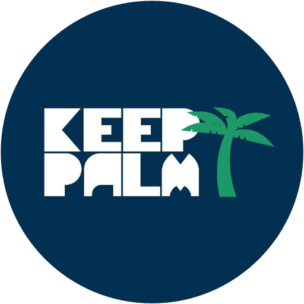

Progetti in lavorazione. Scegli quello che ti interessa.
Gestionale per yacht: equipaggio, documenti, conformità, manutenzioni.
La mappa dei nostri viaggi e dei nostri ricordi.
Dieta, piano dei pasti, ricette, spesa e dispensa di casa.